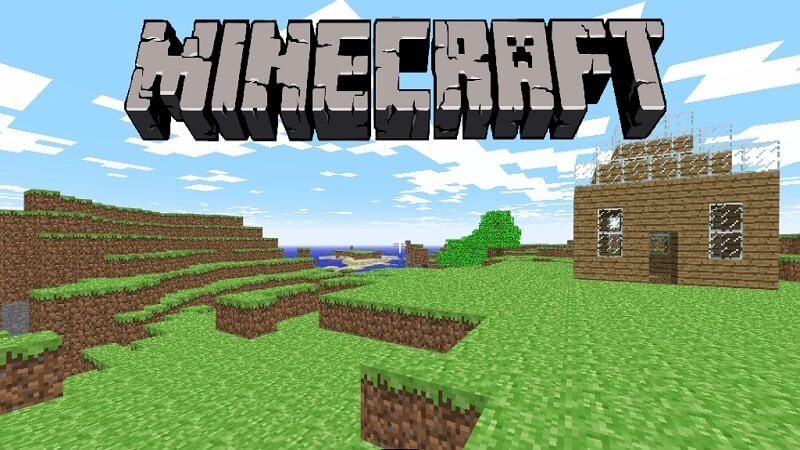

datos

11.8.9
la version mas utilizada hoy en dia por la mayoria de player de minecraft es la version 1.8.9 la version del pvp (player vs player),entre los mejores del pvp estan(spreen,farfadox,danteh,shadoune,conterstine,hasvick,etc).
21.19 y 1.12
la version 1.19 es la version mas nueva con algunos cambios incluyendo a nuevos mobs(animales hostiles o dociles),como el warden y allay, la 1.12 es la version mas utilizada para mods(paquetes creados por usuarios para tener mas contenido dentro del juego), asi como tambien unas de las versiones mas utilizadas para minecraft tecnico.